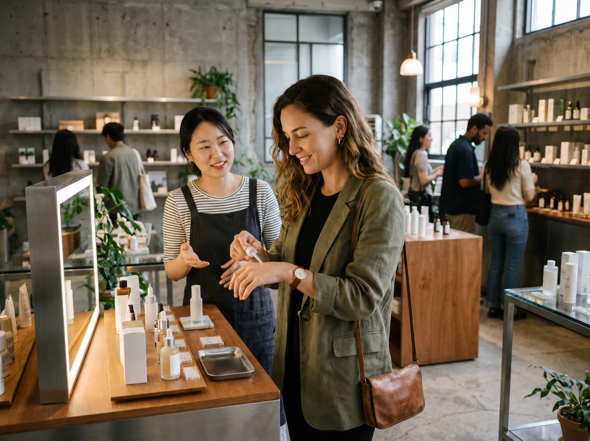

Acheter des soins de la peau
Les soins sont la partie de la K-Beauty la plus facile à explorer sans grande préparation. Olive Young est présent partout à Séoul ; grands magasins, boutiques phares de marques et petites boutiques spécialisées élargissent le choix de produits et de gammes de prix.
Si vous essayez un produit pour la première fois, surtout sur une peau sensible, évitez d’ouvrir plusieurs nouveautés à la fois. Photographiez aussi le nom et le format exacts avant de quitter la Corée : les emballages d’une même gamme peuvent beaucoup se ressembler.